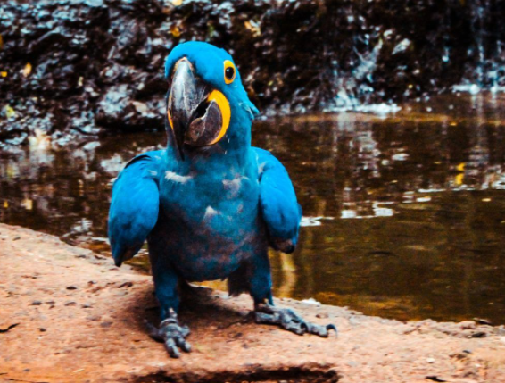

Nombre comun
Guacamaya Bandera
Nombre cientifico
Ara macao
descripcion
La Guacamaya Bandera (Ara macao) también conocida como Guacamayo Macao, es una de las Guacamayas más grandes llegando a medir 90 cm de longitud y con un peso de 1 kg. Se puede diferenciar a simple vista por sus colores, la mayoría de sus plumas son de color rojo escarlata, en sus alas y cola tiene un color amarillo loco y las puntas azules, en ocasiones tienen pequeñas plumas de color verde. Su cara tiene unos colores blancos al inicio y al final va cambiando a unos colores oscuros como negro